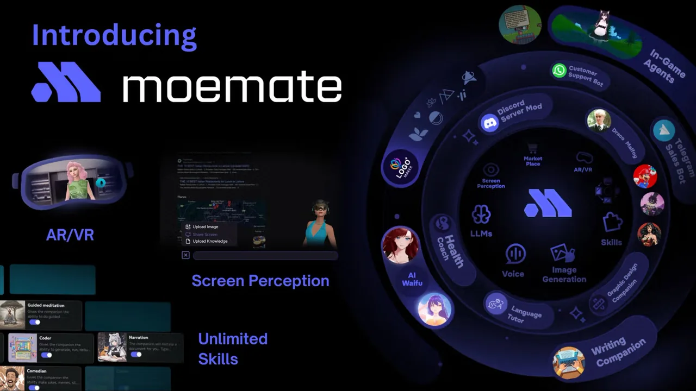

AI Systems Architect and Product Lead
AI Platform Scaled From Launch to 6M+ Users
A consumer AI platform that had to go from promising demo to a system millions of people use every day. I owned the AI architecture and the product decisions around it: character agents with long-term memory and personality modelling, a model layer that routes between models by task, cost and quality, guardrails and fallbacks so a single bad response never reached a user, and evals and monitoring so behaviour changes were caught in data before they became incidents. Underneath sat the scaling work: microservices, event-driven pieces where they earned their place, Docker and Kubernetes on cloud infrastructure. Outcome: a platform that grew from 0 to more than 6 million users, with the AI layer holding up in production, not just in demos.
- Generative AI
- AI Architecture
- AI Agents
- FastAPI
- Microservices
- Kubernetes
- OpenAI API
- Anthropic Claude
- Google Cloud